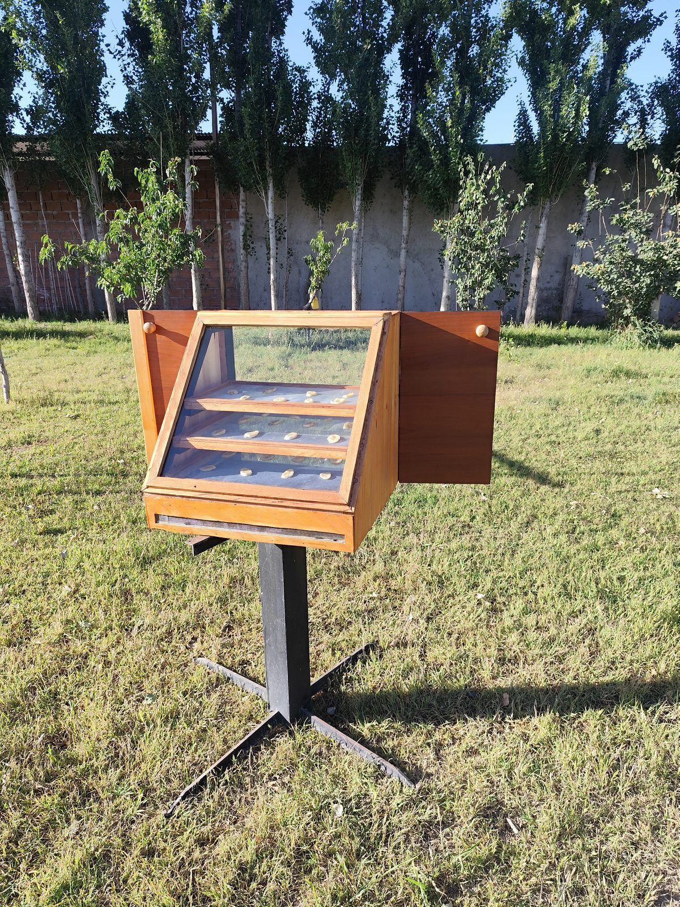
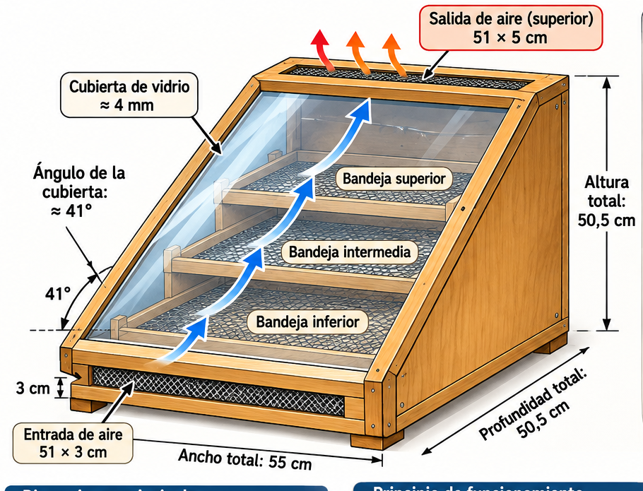
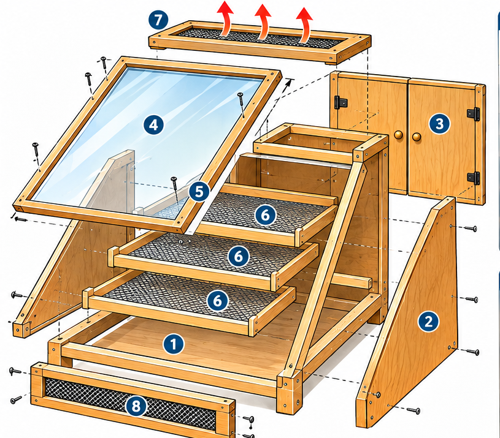
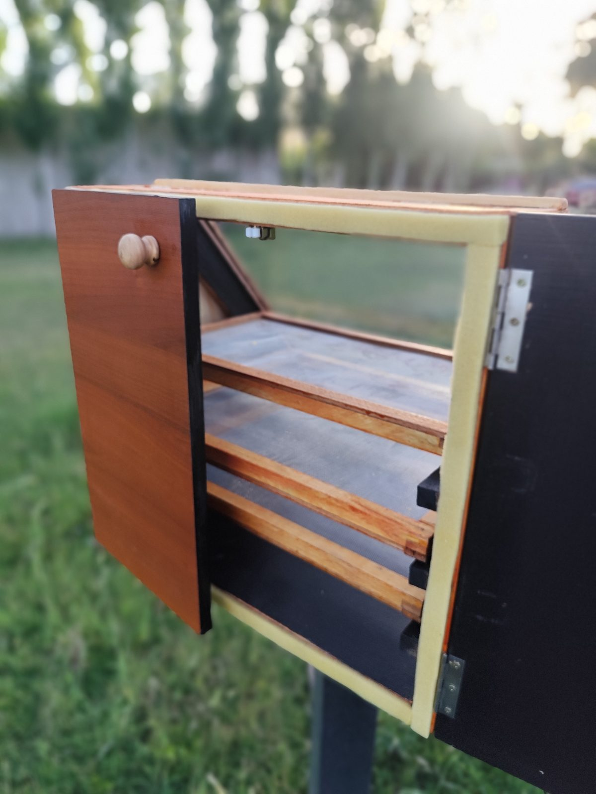
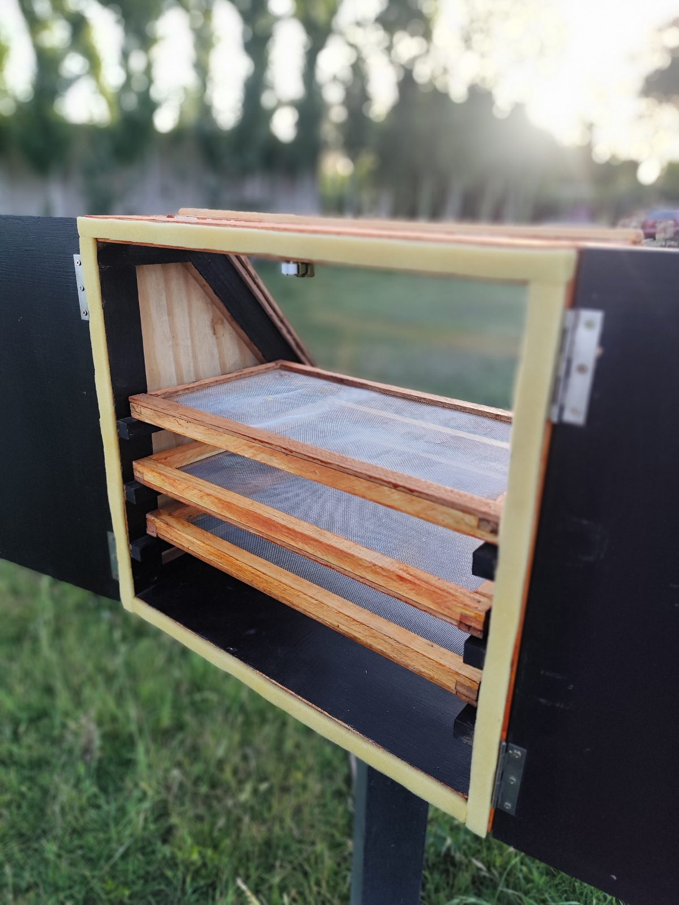
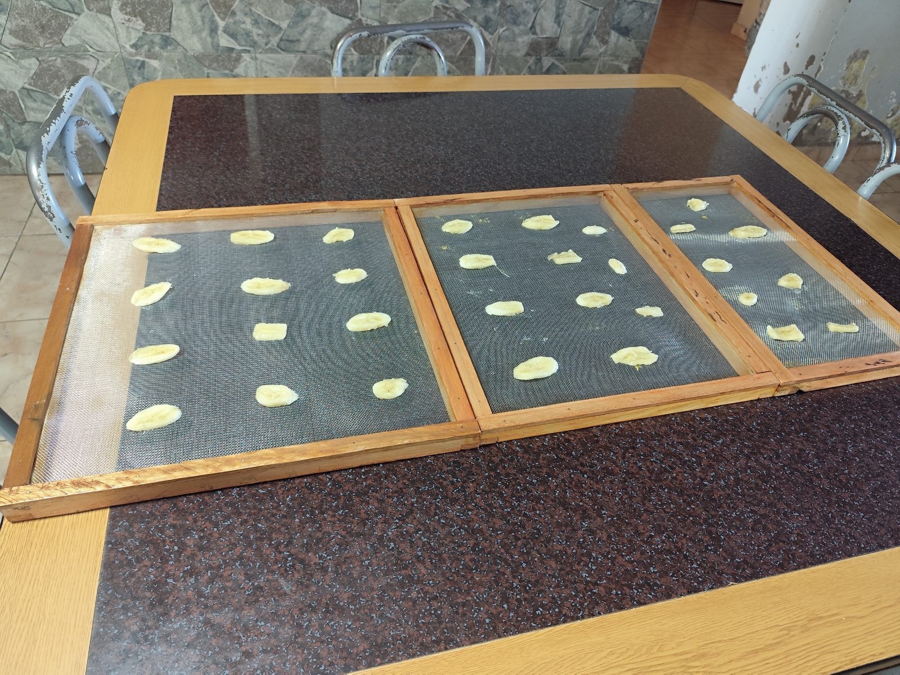
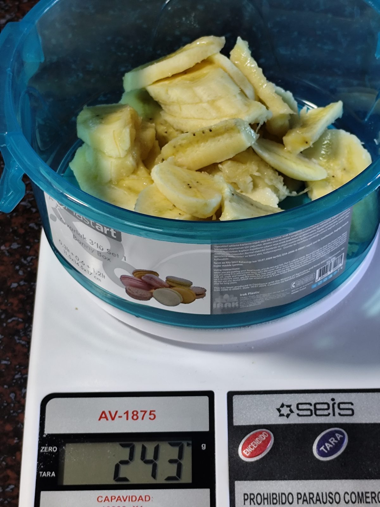
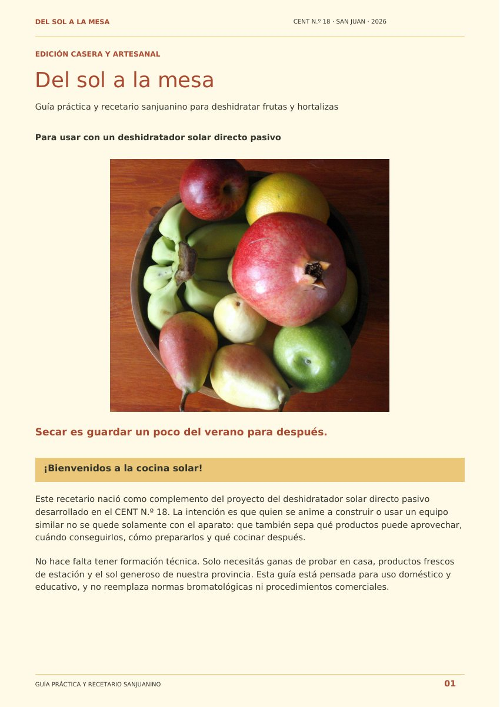
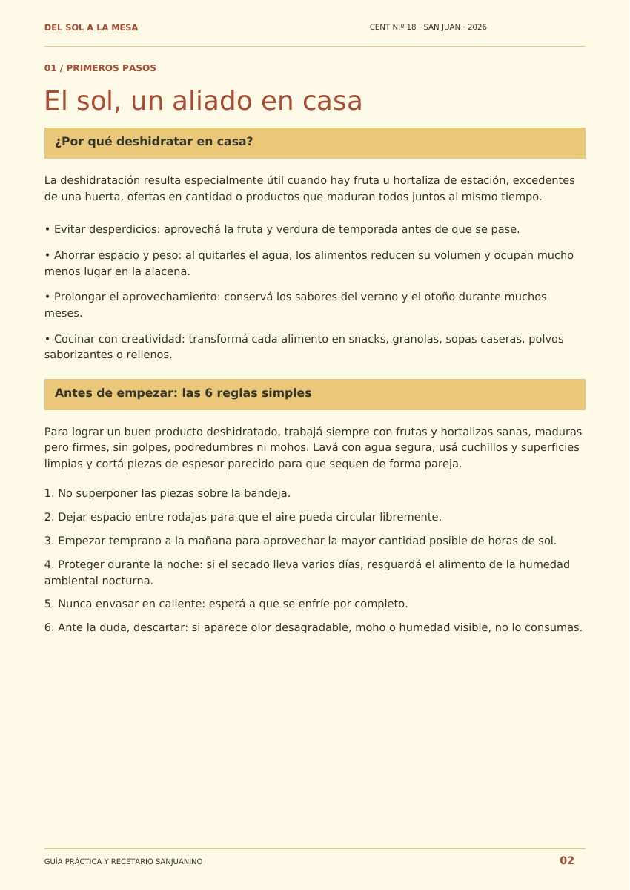

CENT N.º 18 · Gestión de Energías Renovables · San Juan
Deshidratador solar
directo y pasivo
Una tecnología sencilla para conservar alimentos usando radiación solar, circulación natural del aire y materiales accesibles.
01 · EL PROYECTO
Simple a propósito
El desafío no fue construir una máquina sofisticada, sino demostrar que una solución replicable puede aprovechar el sol de San Juan para retirar humedad de un alimento sin electricidad.
El prototipo combina en un mismo gabinete la captación solar, la cámara de secado y el recorrido ascendente del aire. La radiación atraviesa el vidrio, calienta el interior y el aire menos denso asciende, renovándose por una entrada inferior y una salida superior.
madera reutilizadavidriomalla inoxidablesin ventiladorsin batería
Dimensiones del prototipo
- Ancho
- 55 cm
- Profundidad
- 50,5 cm
- Altura
- 50,5 cm
- Cubierta
- ≈ 41°
- Bandejas
- 3
- Accionamiento
- Pasivo
Equipo construido y probado por el grupo. El soporte de mesa reutilizado no forma parte del principio de funcionamiento.
02 · CÓMO FUNCIONA
Sol + aire + diferencia de densidad

Entra aire
El aire exterior ingresa por la abertura frontal inferior protegida con malla.
Se calienta
La radiación atraviesa el vidrio y las superficies oscuras convierten parte de esa energía en calor.
Absorbe humedad
El aire circula alrededor de las bandejas y toma humedad del alimento.
Asciende y sale
Al calentarse, el aire reduce su densidad, asciende y abandona el gabinete por la salida superior.
Idea clave: el gabinete funciona a la vez como captador solar, cámara de secado y conducto de circulación natural.
03 · CONSTRUCCIÓN

Materiales accesibles y mantenimiento simple
La estructura principal se construyó con madera reciclada; los cerramientos utilizan madera terciada y recortes de fenólico. La cubierta es de vidrio y las tres bandejas tienen bastidor de madera con malla mosquitera de acero inoxidable.


04 · PRUEBA EMPÍRICA
Una jornada con banana
Jueves 12 de noviembre de 2026 · 08:00–18:30 · cielo despejado.
La prueba se diseñó para mostrar de forma directa que el equipo produce una pérdida apreciable de masa del alimento. No se planteó como una caracterización térmica de laboratorio.
Inicio184 g
→
Final104 g


05 · VIDEO EXPLICATIVO
El proyecto contado por nosotros
Galería
Usá las flechas, los puntos o deslizá con el dedo.
1 / 1
07 · RECETARIO
Recetario
Pasá las páginas de Del sol a la mesa como si fuera un pequeño libro digital.
Páginas 1–2 / 13


08 · LABORATORIO SOLAR 3D
Mové el Sol y mirá cómo cambia la sombra
Modelo didáctico aproximado con coordenadas proyectadas en el suelo. Arrastrá para orbitar, usá la rueda o pellizco para acercarte.
San Juan · lat. 31,54° S
Cargando laboratorio 3D…
Nota: el 3D es un modelo educativo construido a partir de las dimensiones y fotografías del prototipo; no reemplaza un modelo CAD de fabricación. La posición solar calculada es aproximada y se usa con fines didácticos.
09 · DOCUMENTACIÓN
Todo el trabajo, para leer o descargar
UNA IDEA QUE PUEDE REPLICARSE
Sol, aire, materiales simples
y ganas de experimentar.
El proyecto muestra que la energía solar térmica puede aplicarse a una necesidad cotidiana con una solución comprensible, accesible y sin consumo eléctrico.